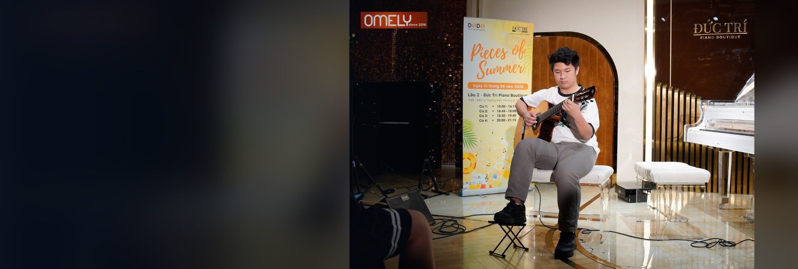
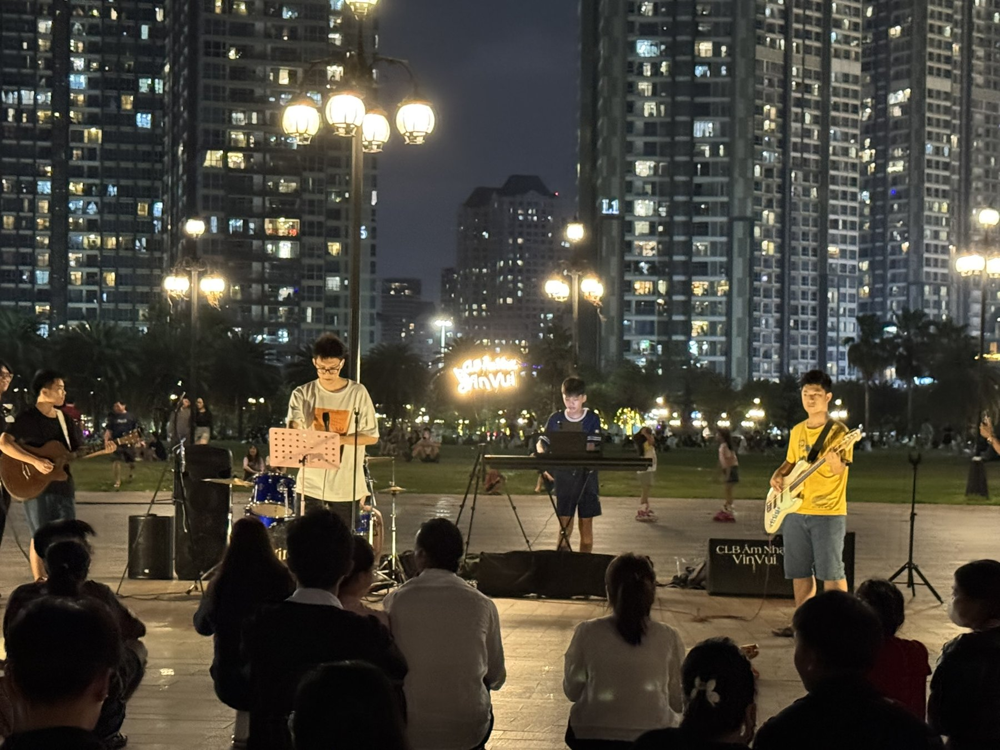
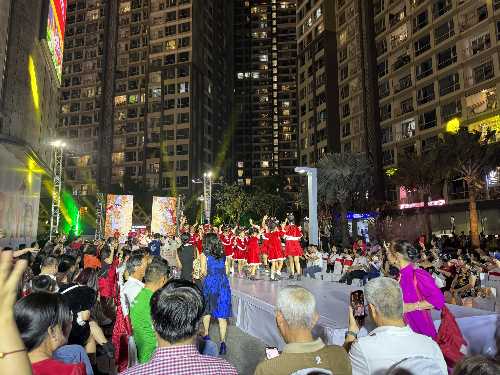
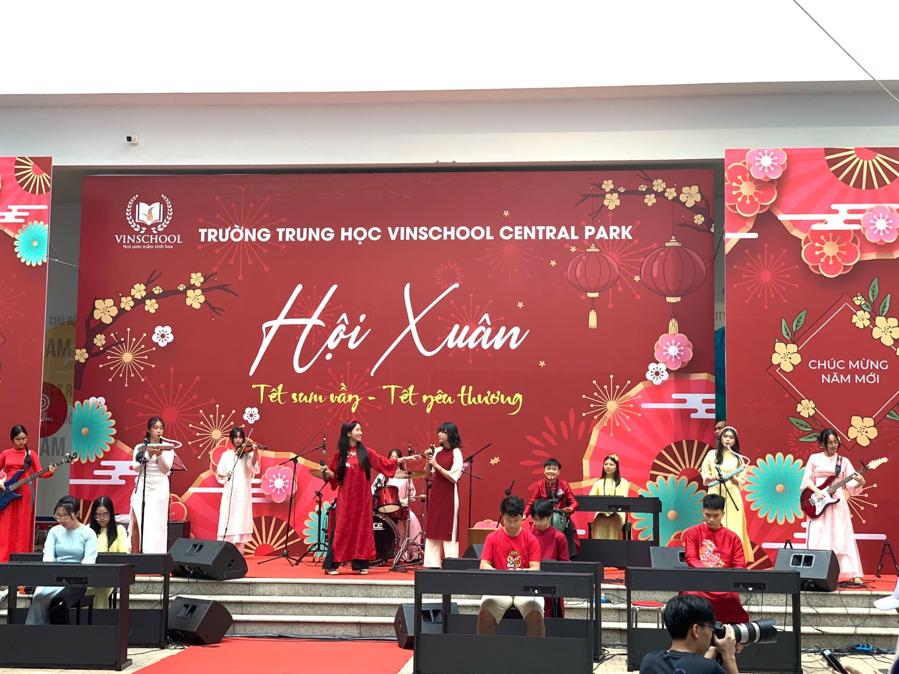
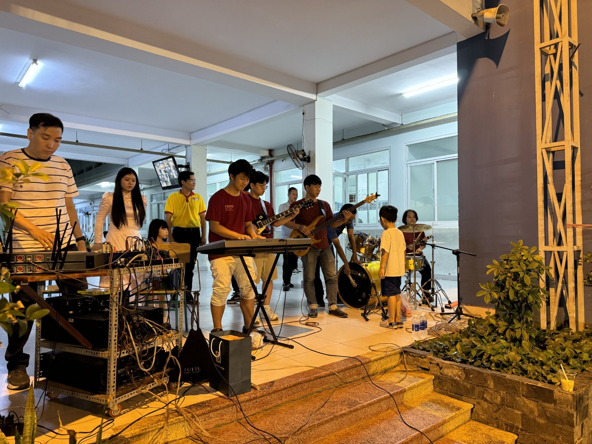
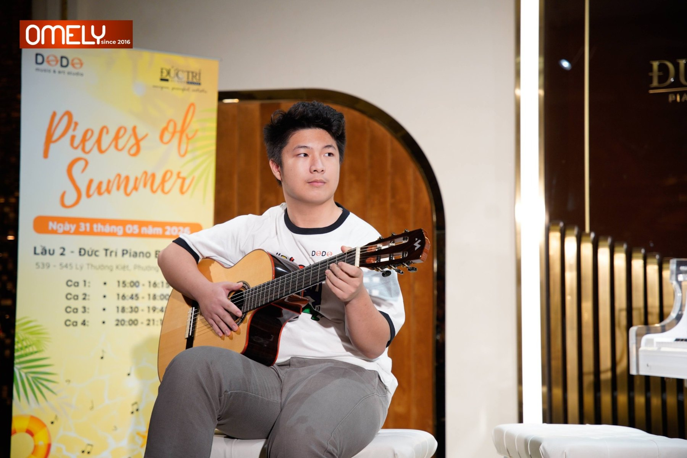

Moments on stage.
From guitar to piano and bass, music has given me a different language for creativity and connection. Here are a few moments from performances and the people who made them meaningful.

Asian Primary School Singing Contest
First place for a performance of “Nevada” by Vicetone. Khoi created his own choreography, practiced independently, and entered the contest on his own initiative.
Watch the performance →
Year-End Performance — Thiên Ca Music School
Khoi performed “Canon in D” on guitar in a duet with another student at the school’s year-end recital.
Watch the guitar duet →
River Flows in You — Piano at Home
A home piano practice recording from 2021, playing “River Flows in You.”
Watch the piano recording →
VinVui Community Jam Sessions
Informal open-air music gatherings in 2025 at Vinhomes Central Park, where residents came together to listen and join in. Khoi played electric guitar with fellow musicians.
Explore the photo album →
Band Piano Showcase — End of Term II
Khoi performed “Everything She Does Is Magic” on solo piano with a backing soundtrack at the End of Term II showcase. Watch an excerpt from the performance and view the official event poster.
Watch the piano performance →
Christmas Celebration 2023
Khoi performed on keyboard at a ticketed Christmas celebration at Vinhomes Central Park, with 1,000 tickets for the event.
Explore the event album →
Hội Xuân — Vinschool Central Park
Khoi played keyboard with fellow student musicians during the school’s Lunar New Year celebration.
Explore the event album →
Bình Thạnh District Cultural Festival
A community cultural event in Ho Chi Minh City. Khoi played keyboard with the band; a stage photograph and short video clip capture the performance.
Explore the event album →
Pieces of Summer
An intimate live performance at Đức Trí Piano Boutique, Ho Chi Minh City. Photographs capture Khoi performing guitar at the event.
Explore the event album →
Phiên Chợ Tết — Lunar New Year Community Festival
At the Lunar New Year (Tết) spring festival for the Vinhomes Central Park residential community, Khoi played bass guitar for “Cung đàn mùa xuân” with a vocalist, guitarist and drummer.
Explore the event album →More performances to come.
Additional events, images, and videos will be added as the collection grows.
Six pieces, six interpretations.
Beyond live events, I enjoy exploring the classical guitar through pieces that challenge my technique, musical expression, and interpretation. These performances were recorded in a practice studio.
Three selected pieces appear first. Explore the complete collection below.